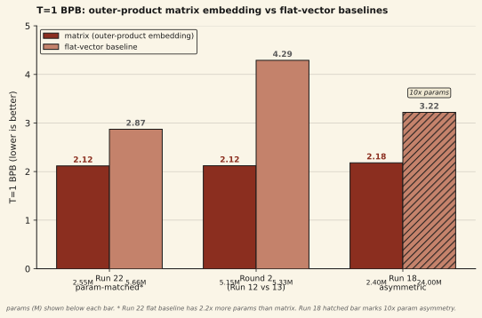

We report an empirical observation that has held across three comparisons in the matrix-thinking project: a token embedding defined as the outer product of two learned vectors (byte b → ub ⊗ vb, producing a rank-1 d × d matrix) gives a lower T=1 BPB than a flat-vector byte embedding at comparable or worse parameter counts. The cleanest signal is the Run 22 param-matched ablation, where the flat-vector baseline has 2.2× more parameters than the matrix model and still loses T=1 BPB by 26% (Matrix 2.55M T=1 BPB 2.117 vs Flat 5.66M T=1 BPB 2.872). The Round 2 comparison on 2.19B tokens of reasoning data (Run 12 vs Run 13) shows the same direction at a larger scale: Matrix Thinker 5.15M T=1 BPB 2.12 vs tokens-matched LoopFormer 5.33M T=1 BPB 4.29 — a 175× gap in PPL (140.6 vs 24,587.7). A param-asymmetric ablation (Run 18) gives the flat baseline 10× more parameters and matrix still wins at T=1 (2.18 vs 3.22); we flag it as unfair on params and treat it as supporting data, not headline. All runs are n = 1 at under 25M parameters. The mechanism — whether the advantage comes from the rank-1 matrix structure or from the factored parameterization (which any low-rank bottleneck embedding would share) — is unresolved, and a three-way ablation (standard flat vs ALBERT-style bottleneck vs outer-product) is the single Priority 1 follow-up.
01Background
Standard transformer language models embed each vocabulary item as a flat d-dimensional vector. The embedding table has shape (V, d), a lookup produces a vector, and the rest of the model treats that vector as the unit of computation. The per-token parameter cost is d.
Matrix-valued token representations change the unit. Each token becomes a d × d matrix rather than a flat d-dim vector. The simplest way to produce such a matrix from a discrete token id is the outer product of two learned vectors: for each byte b, keep two d-dim tables ub and vb, and define the embedding as the rank-1 matrix ub ⊗ vb. The matrix has d² entries and 2d parameters per token. The two are related by a strict constraint: every row of the matrix is a scalar multiple of vb and every column is a scalar multiple of ub. No information has been added relative to the two d-dim vectors, but the model now sees a structured d × d object that downstream matrix operations can read along rows and columns separately.
The interesting empirical question is whether this embedding produces a better starting point for a language model than a standard flat-vector embedding at comparable parameter counts. The question matters because the outer-product embedding sits at the boundary between two interpretations. One interpretation: the matrix structure is substantive — bilinear read-outs can read the row and column directions independently, and downstream matrix operations preserve that structure. The other interpretation: any low-rank factored embedding (for example, an ALBERT-style bottleneck of shape V → m → d²) would give the same advantage, because the advantage comes from the compressed parameterization rather than from the matrix shape per se. We have empirical evidence that the first interpretation is consistent with the data; we do not have evidence that it is preferred over the second. This note reports the gap, describes three comparisons that produced it, and names the experiment that would separate the two interpretations.
The sibling notes in this series (finding 01 and finding 02) describe what happens during iterative refinement under matrix operations. The present note concerns only the embedding layer and only the T = 1 setting (no iteration). The advantage it reports is about the starting representation, before any thinking loop has run.
02Setup
The outer-product embedding
For vocabulary size V and matrix dimension d, we maintain two embedding tables Eu, Ev ∈ ℝV × d. A byte b is embedded as:
u = E_u[b] # (d,)
v = E_v[b] # (d,)
M = u ⊗ v # (d, d), rank-1
# implementation: torch.einsum('...i,...j->...ij', u, v)Each token therefore carries 2d parameters and produces a d × d matrix with d² entries. Initialization is N(0, σ²) on each table; because the outer product multiplies two independent samples, the entries of the resulting matrix have std σ² rather than σ. We scale σ = √target_std so the product matrix has the target standard deviation at init. This correction was important — an earlier run without it produced degenerate embeddings.
The three comparisons
We ran three comparisons that bear on the embedding question. None is a clean three-way ablation; the three together bound the effect from several directions. One is a true param-matched ablation (Run 22). One is a tokens-matched comparison on a larger reasoning corpus (Round 2: Run 12 vs Run 13). One is param-asymmetric and we flag it.
- Run 22 param-matched ablation (headline). Matrix model: d = 16, 12 layers, 2,552,788 parameters. Flat-vector model: dmodel = 256, 12 layers, standard attention, 5,658,428 parameters. The flat model has 2.2× more parameters than the matrix model. Same data pipeline, same optimizer, same byte tokenization, same step count. Matrix T=1 BPB 2.117, Flat T=1 BPB 2.872. The flat model wins at T=8 (iteration helps it more) but loses at T=1 by 26% BPB despite the parameter advantage. Param-matching at d = 16 is structurally hard: a standard 256-dim attention layer costs ~262K params, a matrix 16×16 layer costs ~2K params, a ~130× per-layer gap. There is no way to match both the per-layer FLOPs and the total param count cleanly without changing something else — so Run 22 takes the version of the test where the flat model is over-parameterized relative to the matrix model.
- Round 2 (Run 12 vs Run 13): tokens-matched reasoning corpus. Matrix Thinker d = 32, 8 thinking layers, MultiProbeHead output (no vector collapse), 5,155,960 parameters, against a LoopFormer vector baseline at 5,330,400 parameters, on 2.19B tokens of OpenR1-Math reasoning traces plus WikiText-103. Same data, same batch (96/GPU × 8 GPUs = 768 effective), same optimizer, same 3000-step budget. Matrix Thinker reached T=1 PPL 140.6 → BPB 2.12; LoopFormer reached L=1 PPL 24,587.7 → BPB 4.29. That is a 175× gap in PPL and a 2× gap in BPB at the single-step evaluation. LoopFormer then closes and reverses at L=8 (PPL 26.0, beating Matrix Thinker's T=8 PPL 72.4 by 2.8×) — iteration is how the vector baseline becomes competitive. The T=1 gap is the embedding-layer observation; the L=8 reversal is the reason we confine the claim to the single-step setting.
- Run 18 param-asymmetric ablation (flagged). Matrix model: d = 16, 2.4M parameters. Flat model: outer-product embedding then flatten to a 256-dim vector, standard transformer stack, 24M parameters (10× the matrix). Same embedding source. Same data. Matrix T=1 BPB 2.18, Flat T=1 BPB 3.22. The flat model wins at T=8 due to its parameter advantage but loses at T=1 even with 10× the parameters. We flag the comparison as unfair on params and treat it as a supporting data point. It is included because the embedding source is held fixed (same outer-product lookup), so the only difference is whether downstream layers see the structured matrix or a flattened vector.
A fourth data point from our earliest 8×H100 run is worth naming as a pre-registration check but not as a BPB comparison: on a smaller 118M-token WikiText-103 corpus, a Matrix Thinker (Run 10, 5,154,936 params) reached T=1 PPL 722.9 against a Vector Thinker baseline (Run 11, 5,149,248 params) at T=1 PPL 8,273.7. That is an 11.4× PPL advantage at matched ~5.15M parameters. We do not report a BPB number for this pair because the summary files for that run did not record one and we do not want to back-fill a conversion after the fact. We mention it only to note that the T=1 direction of the effect reproduces on a different dataset at a different data scale.
Metric
BPB (bits per byte, log base 2) is the eval loss normalized to bytes. For a model at vocab V with a tokenizer that produces ~k bytes per token on a given corpus, BPB is the cross-entropy in nats divided by k · ln(2). For byte-level models (vocab = 256), BPB is the cross-entropy in bits per byte directly. We report BPB rather than PPL because our comparisons span byte-level and BPE-tokenized runs; reporting a single number across both requires the byte-level denominator. The Round 2 BPB numbers (Run 12 and Run 13) are derived from val loss using the reasoning-corpus bytes-per-token ratio; the Run 18 and Run 22 numbers are direct byte-level BPB.
03Results
At T=1 the outer-product matrix embedding gives a lower BPB than the flat-vector baseline in each of the three comparisons. The cleanest of the three is Run 22, where the flat baseline has 2.2× more parameters than the matrix model and still loses. We lead with that comparison because it is the one in which the baseline is handed every advantage except the embedding.

| comparison | matrix | baseline | t=1 bpb (matrix) | t=1 bpb (baseline) | gap |
|---|---|---|---|---|---|
| Run 22 (param-matched) | 2.55M, d=16 | 5.66M, flat dmodel=256 | 2.117 | 2.872 | −26% |
| Round 2 (Run 12 vs Run 13) | 5.15M, d=32 | 5.33M, LoopFormer | 2.12 | 4.29 | −51% |
| Run 18 (asymmetric) | 2.4M, d=16 | 24M, flat 256-dim | 2.18 | 3.22 | −32% |
What the advantage is not
The single-step advantage does not translate into a total-BPB advantage once iteration is allowed. With enough parameters and enough iterative refinement steps, a flat-vector model can close the gap and then reverse it: in Run 22 the flat model reaches T=8 BPB ~1.50 against the matrix model's T=8 BPB 1.86; in Round 2, LoopFormer reaches L=8 PPL 26.0 against Matrix Thinker's T=8 PPL 72.4, a 2.8× reversal in LoopFormer's favor at full iteration depth; and in Run 18 the 24M flat model reaches T=8 BPB 1.01 against the matrix model's T=8 BPB 1.91. We report these numbers so the T=1 claim is not over-read. The embedding-layer advantage is at the starting point; it says nothing about what happens once the model is allowed to think. Our earlier note on the FLOPs-matched gap (Run 14) makes the point in the reverse direction: matrix operations at matched FLOPs lose to vector operations. The outer-product embedding wins at T=1; the outer-product thinking layers do not win at matched FLOPs at T=8. These are two different findings at two different layers of the stack.
04Discussion
The central interpretive question is whether the T=1 advantage comes from the matrix structure or from the factored parameterization. The outer-product embedding is simultaneously two things. It is a rank-1 matrix: a structured d × d object that bilinear read-outs can read along row and column directions. It is also a factored parameterization: a d²-dim object produced from 2d free parameters via the outer product, which is one kind of low-rank bottleneck embedding. Every one of our comparisons conflates these two properties. The flat-vector baselines in Run 22, Round 2, and Run 18 do not carry the factored parameterization — their embeddings are standard (V, d) tables with d free parameters per token and no compression. We cannot tell from the data above whether a flat-vector model with a comparably bottlenecked embedding (for example an ALBERT-style (V, m) → (m, d²) factorization with m = 2d, matching the 2d free parameters per token) would close the gap.
Two candidate mechanisms, one observation. The first candidate is that the rank-1 structure is doing real work: downstream matrix operations in our stack read the row and column directions separately (RowThenCol projections, Frobenius attention, MultiProbeHead bilinear read-outs), and a d × d object presents those directions to the layer above in a way a flattened vector does not. The second candidate is that compression alone is the driver, and any low-rank factored embedding with the same number of free parameters would produce the same T=1 gap. The current data is consistent with either. We do not take a position, and we defer the question to the three-way ablation listed as Priority 1 in Future work.
A related observation: the embedding layer carries a large fraction of the total parameter budget in our models at this scale. For the Round 2 configuration the breakdown is embed 3.3M, think 197K, head 1.6M — the embedding is ~64% of the model. At small scale the embedding is not a thin look-up table bolted onto a larger backbone; it is most of the model. An advantage at the embedding layer therefore shows up in T=1 BPB more strongly than it would at larger scale, where the embedding fraction shrinks. Whether the gap persists at 100M or 1B parameters is an open question and one we do not have the compute to answer today.
The relationship to prior work on structured token representations is worth naming. Smolensky's Tensor Product Representations (1990) bind variable-filler pairs via tensor products and were the earliest formal proposal for structured token-level encodings in neural networks. Soft TPR (Sun et al., NeurIPS 2024) is a recent continuous version for visual disentanglement. Our outer-product embedding is a special case — a rank-1 tensor product of two learned vectors with no explicit role/filler interpretation — that we use as a byte-to-matrix lifting rather than as a compositional binding. The line of work makes the ingredient itself unsurprising; what the observation here adds is the T=1 gap against a parameter-advantaged flat-vector baseline in a byte-level language modeling setting, and the direction-reproduction across three different configurations.
05Limitations
- Single seed for every run. All three comparisons are n = 1. We have not replicated across seeds. The direction of the effect is consistent across three different model configurations and two different training corpora, which is weak evidence against a pure-noise explanation, but we do not report confidence intervals and do not claim the gap magnitude is tight.
- Small scale. The largest model in the comparison is the Run 18 flat baseline at 24M parameters. The matrix models are all under 6M parameters. Conclusions about representation quality at this scale are fragile: at 288K parameters our models barely learn unigram statistics, and 5M is still small enough that data efficiency can mask or invert architectural effects. The gap may shrink, hold, or reverse at 100M+.
- The mechanism is unresolved. The observation conflates "rank-1 matrix structure" and "factored parameterization." We cannot tell from the current data which is doing the work. A clean three-way ablation — standard flat embedding vs. ALBERT-style bottleneck embedding (matched free parameters) vs. outer-product embedding — has not been run. This is the single most important follow-up and we flag it as such in Future work.
- Cross-comparison inconsistencies. The three comparisons use different matrix dimensions (d = 32 for Round 2, d = 16 for Run 18 and Run 22), different training corpora (2.19B tokens of OpenR1-Math reasoning + WikiText-103 for Round 2; Run 18 and Run 22 used byte-level mixed corpora), and different baseline architectures (LoopFormer vs standard transformer flat). The direction of the effect holds across these varied settings, which is the reason we call the observation reproducible; the variation is also the reason we cannot derive a single clean effect size from the numbers.
- BPB conversion across comparisons. Round 2 reports PPL and we convert to BPB via the reasoning-corpus bytes-per-token ratio. Run 18 and Run 22 are byte-level and report BPB directly. The two BPB numbers are on comparable scales but not identically defined. We keep the reported precision modest (two to three decimal places) for this reason.
- The T=1 framing is narrow. The claim is about single-step processing. Once iterative refinement is enabled, flat-vector models with more parameters can beat matrix models at T=8 (Run 18, Run 22). The embedding-layer advantage is real but it is not the whole story, and it should not be read as "matrices beat vectors in general."
- At small scale, embedding dominates. The embedding is ~64% of the parameter budget in the Round 2 model. A gap at the embedding layer therefore moves the total T=1 BPB more strongly than it would at larger scale. We do not know how the effect size scales with total parameters.
06Future work
Three concrete follow-ups, in priority order:
- Param-matched three-way embedding ablation. Run three models on identical data, optimizer, step count, and seed set (3+ seeds per condition), varying only the embedding: (a) standard flat (V, d) with d chosen so total params match, (b) ALBERT-style bottleneck (V, m) → (m, d²) with m = 2d to match free params per token but no structural constraint, (c) outer-product (V, d) × (V, d). Downstream backbone held fixed. If (a) and (b) track each other but (c) wins, the advantage is structural. If (b) and (c) track each other but (a) loses, the advantage is compression. If all three track, we were wrong and should say so. This is the experiment that has the highest chance of resolving the mechanism question. Listed in the project roadmap as a backup path; the data in this note suggests it should be moved forward.
- Higher-rank starting embeddings. Replace the rank-1 outer product with a sum of k outer products (rank-k start) or a pairwise-interaction embedding (k-bigram, encoding identity, left context, and right context as three separate rank-1 components summed). If the starting rank matters, higher-rank starts should shift the T=1 BPB; if the matrix is a reshaped vector and nothing more, they should not. This is a second way to probe the structure-vs-compression question from the Discussion.
- Scale replication at 10M+ parameters. Run the matched comparison at 10M–50M parameters on a standard byte benchmark (enwik8 or text8, proper splits). If the gap holds, the finding is publishable beyond an internal note. If it shrinks to noise, the observation is a small-scale artifact and we reframe. This is expensive (~50 H100 hours) and justified only if the three-way ablation confirms a structural advantage at small scale.
07Reproducibility
The outer-product embedding module lives at matrix-thinking/src/matrix_model.py (class MatrixEmbedding, about 20 lines). The training scripts for the three comparisons are archived:
- Run 22 param-matched ablation: matrix and flat scripts archived under experiment-runs/run22/. The flat run crashed near step 2800 due to pod shutdown; we report the T=1 and T=8 BPB at the latest saved checkpoint before the crash and mark the T=8 number as approximate.
- Round 2 Matrix Thinker (Run 12): experiment-runs/8xh100-session1/round2_matrix_script.py. Summary at round2_multiprobe_SUMMARY.txt. Full training log at round2_matrix_train.log.
- Round 2 LoopFormer tokens-matched baseline (Run 13): experiment-runs/8xh100-session1/loopformer_96K_script.py with max_steps=3000. Results JSON at loopformer_3000steps_results.json.
- Run 18 asymmetric ablation: experiment-runs/run18/, 24M flat-vector model with outer-product embedding source.
Raw numbers quoted in this note, with source files:
- Run 22 Matrix T=1 BPB 2.117, T=8 BPB 1.861. Flat T=1 BPB 2.872, T=8 BPB ~1.502. Source: EXPERIMENT_LOG.md Run 22 entry.
- Round 2 Matrix Thinker (Run 12) T=1 PPL 140.6 → BPB 2.12, T=8 PPL 72.4 → BPB 1.67. 5,155,960 params, 2.19B train tokens. Source: round2_multiprobe_SUMMARY.txt and EXPERIMENT_LOG.md Run 12 entry.
- Round 2 LoopFormer (Run 13) L=1 PPL 24,587.7 → BPB 4.29 (val_loss = 10.11), L=8 PPL 26.0. 5,330,400 params, same 2.19B-token corpus and same optimizer as Run 12. Source: loopformer_3000steps_results.json.
- Run 18 Matrix T=1 BPB 2.18, T=8 BPB 1.91. Flat T=1 BPB 3.219, T=8 BPB 1.011. Source: EXPERIMENT_LOG.md Run 18 entry.
- PPL-only sanity check (not used for BPB): Run 10 Matrix Thinker T=1 PPL 722.9 vs Run 11 Vector Thinker T=1 PPL 8,273.7, same 118M-token WikiText-103 corpus, matched ~5.15M params. Source: round1_matrix_SUMMARY.txt and round1_vector_SUMMARY.txt.
References
- Smolensky, P. (1990). Tensor product variable binding and the representation of symbolic structures in connectionist systems. Artificial Intelligence, 46(1-2), 159-216.
- Sun, B., et al. (2024). Soft TPR: Continuous tensor product representations for disentangled representation learning. NeurIPS 2024.
- Jeddi, A., et al. (2026). LoopFormer: shortcut consistency for variable-depth evaluation. ICLR 2026. arXiv:2602.11451